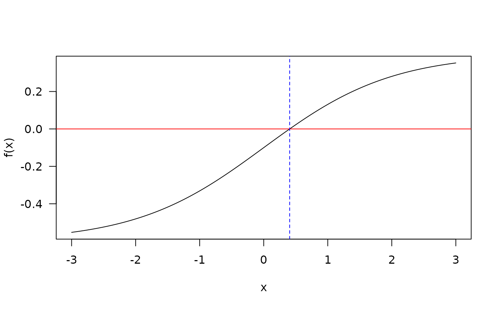
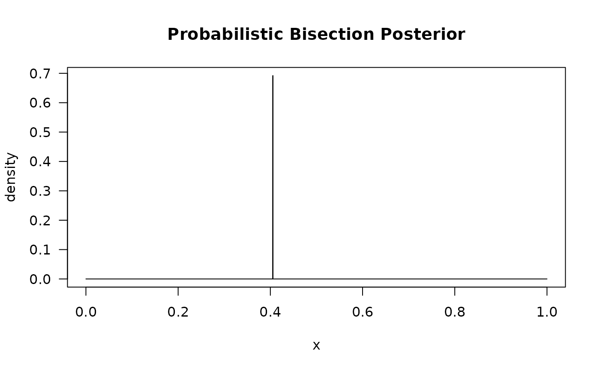
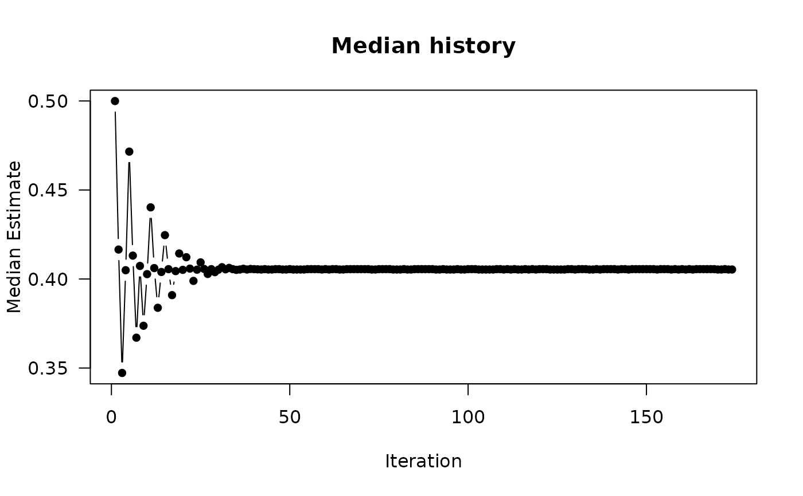

The function PBA searches a specified interval for a root
(i.e., zero) of the function f(x) with respect to its first argument.
However, this function differs from deterministic cousins such as
uniroot in that f may contain stochastic error
components, and instead provides a Bayesian interval where the root
is likely to lie. Note that it is assumed that E[f(x)] is non-decreasing
in x and that the root is between the search interval (evaluated
approximately when check.interval=TRUE).
See Waeber, Frazier, and Henderson (2013) for details.
PBA(
f.root,
interval,
...,
p = 0.6,
integer = FALSE,
tol = if (integer) 0.01 else 1e-04,
maxiter = 300L,
miniter = 100L,
wait.time = NULL,
f.prior = NULL,
resolution = 10000L,
check.interval = TRUE,
check.interval.only = FALSE,
verbose = interactive()
)
# S3 method for class 'PBA'
print(x, ...)
# S3 method for class 'PBA'
plot(x, type = "posterior", main = "Probabilistic Bisection Posterior", ...)noisy function for which the root is sought
a vector containing the end-points of the interval
to be searched for the root of the form c(lower, upper).
Note that if the interval is specified as c(upper, lower), where
upper > lower then it the search will be organized such that increasing
the value of the root estimate will result in lower f(x) values
additional named arguments to be passed to f
assumed constant for probability of correct responses (must be > 0.5)
logical; should the values of the root be considered integer
or numeric? The former uses a discreet grid to track the updates, while the
latter currently creates a grid with resolution points
tolerance criteria for convergence based on average of the
f(x) evaluations
the maximum number of iterations (default 300)
minimum number of iterations (default 100)
(optional) instead of terminating after specific estimate criteria
are satisfied (e.g., tol), terminate after a specific
wait time. Input is specified either as a numeric vector in seconds or as a character
vector to be formatted by timeFormater.
Note that users should increase the number of maxiter as well
so that termination can occur if either the maximum iterations are satisfied
or the specified wait time has elapsed (whichever occurs first)
density function indicating the likely location of the prior
(e.g., if root is within [0,1] then dunif works, otherwise custom
functions will be required)
constant indicating the
number of equally spaced grid points to track when integer = FALSE.
logical; should an initial check be made to determine
whether f(interval[1L]) and f(interval[2L]) have opposite
signs? Default is TRUE
logical; return only TRUE or FALSE to test
whether there is a likely root given interval? Setting this to TRUE
can be useful when you are unsure about the root location interval and
may want to use a higher replication input from SimSolve
logical; should the iterations and estimate be printed to the console?
an object of class PBA
type of plot to draw for PBA object. Can be either 'posterior' or 'history' to plot the PBA posterior distribution or the mediation iteration history
plot title
Horstein, M. (1963). Sequential transmission using noiseless feedback. IEEE Trans. Inform. Theory, 9(3):136-143.
Waeber, R., Frazier, P. I. & Henderson, S. G. (2013). Bisection Search with Noisy Responses. SIAM Journal on Control and Optimization, Society for Industrial & Applied Mathematics (SIAM), 51, 2261-2279.
# find x that solves f(x) - b = 0 for the following
f.root <- function(x, b = .6) 1 / (1 + exp(-x)) - b
f.root(.3)
#> [1] -0.02555748
xs <- seq(-3,3, length.out=1000)
plot(xs, f.root(xs), type = 'l', ylab = "f(x)", xlab='x', las=1)
abline(h=0, col='red')
retuni <- uniroot(f.root, c(0,1))
retuni
#> $root
#> [1] 0.4054644
#>
#> $f.root
#> [1] -1.772764e-07
#>
#> $iter
#> [1] 4
#>
#> $init.it
#> [1] NA
#>
#> $estim.prec
#> [1] 6.103516e-05
#>
abline(v=retuni$root, col='blue', lty=2)

# PBA without noisy root
retpba <- PBA(f.root, c(0,1))
retpba
#> $root
#> [1] 0.4053405
#>
#> $terminated_early
#> [1] TRUE
#>
#> $time
#> [1] 0.11s
#>
#> $iterations
#> [1] 174
#>
retpba$root
#> [1] 0.4053405
plot(retpba)

plot(retpba, type = 'history')

# Same problem, however root function is now noisy. Hence, need to solve
# fhat(x) - b + e = 0, where E(e) = 0
f.root_noisy <- function(x) 1 / (1 + exp(-x)) - .6 + rnorm(1, sd=.02)
sapply(rep(.3, 10), f.root_noisy)
#> [1] -0.0253280174 -0.0236455818 -0.0504469746 -0.0086760733 -0.0327836203
#> [6] -0.0326933098 0.0165276139 -0.0450396704 0.0005554172 -0.0134966024
# uniroot "converges" unreliably
set.seed(123)
uniroot(f.root_noisy, c(0,1))$root
#> [1] 0.3748233
uniroot(f.root_noisy, c(0,1))$root
#> [1] 0.3785736
uniroot(f.root_noisy, c(0,1))$root
#> [1] 0.4954932
# probabilistic bisection provides better convergence
retpba.noise <- PBA(f.root_noisy, c(0,1))
retpba.noise
#> $root
#> [1] 0.3986399
#>
#> $terminated_early
#> [1] TRUE
#>
#> $time
#> [1] 0.09s
#>
#> $iterations
#> [1] 138
#>
plot(retpba.noise)
plot(retpba.noise, type = 'history')
if (FALSE) { # \dontrun{
# ignore termination criteria and instead run for 30 seconds or 50000 iterations
retpba.noise_30sec <- PBA(f.root_noisy, c(0,1), wait.time = "0:30", maxiter=50000)
retpba.noise_30sec
} # }